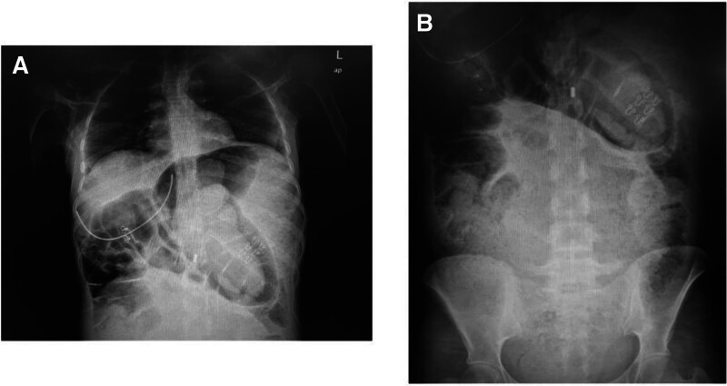

Ficha del catálogo
Megacolon tóxico
- Sistema
- Digestivo
- Modalidad
- RX
- Región
- Colon
- Dificultad
- Avanzado
Es la dilatación aguda no obstructiva del colon asociada a una colitis grave y a un cuadro sistémico de toxicidad, con fiebre, taquicardia, leucocitosis y deterioro del estado general. Se asocia sobre todo a la colitis ulcerosa, a la colitis por Clostridioides difficile y a otras colitis infecciosas o isquémicas graves. Es una urgencia médica y quirúrgica por el riesgo elevado de perforación.
Técnica
La radiografía simple de abdomen en decúbito supino es el estudio básico y se repite de forma seriada, incluso cada 12 a 24 horas, para vigilar la evolución del calibre colónico. La tomografía valora el grosor de la pared, la extensión de la colitis, el líquido libre y las perforaciones ocultas. El enema con contraste y la colonoscopia están contraindicados por el riesgo de perforar.
Qué observar
- Dilatación del colon transverso, que en el paciente en decúbito es el segmento más anterior y por tanto el más gaseoso
- Pérdida del patrón haustral con contorno mucoso liso o irregular
- Improntas nodulares en la luz por edema submucoso o por pseudopólipos
- Ausencia de materia fecal formada en el segmento afectado
- Íleo del intestino delgado acompañante como signo de gravedad
- Gas libre, neumatosis parietal o líquido libre que indican perforación o necrosis
Hallazgos
El colon aparece dilatado de forma difusa, con predominio del transverso, y la pared pierde sus haustras adoptando un aspecto liso o groseramente nodular por el edema y por los pseudopólipos. La tomografía confirma el adelgazamiento parietal en las zonas más distendidas, el realce mucoso irregular, la trabeculación de la grasa pericolónica y el líquido libre. La aparición de gas intramural o de aire libre marca la complicación más temida y obliga a cirugía urgente.
Perlas
El diagnóstico no es solo radiológico. Se requiere la combinación de dilatación colónica con criterios clínicos de toxicidad sistémica, de modo que un colon dilatado en un paciente estable no es un megacolon tóxico. En la vigilancia importa menos alcanzar un número exacto que documentar la tendencia, porque un colon que sigue dilatándose en controles sucesivos pese al tratamiento médico anuncia el fracaso terapéutico.
Diagnóstico diferencial
- Pseudoobstrucción colónica aguda
- No hay colitis subyacente ni toxicidad sistémica, y las haustras suelen conservarse.
- Obstrucción mecánica del colon
- Existe punto de transición con lesión estenosante y el colon distal está colapsado.
- Colitis grave sin dilatación
- Hay engrosamiento parietal y trabeculación pericolónica pero el calibre del colon se mantiene normal.
- Vólvulo de sigmoides
- Un asa única gigante con punto de torsión y ausencia de gas rectal, sin colitis difusa.
- Megacolon crónico
- Dilatación de años de evolución con abundante contenido fecal y sin datos inflamatorios agudos.
Simuladores
- Distensión colónica por íleo postoperatorio en paciente con abdomen doloroso
- Colon redundante con gran contenido gaseoso en paciente estreñido
- Neumatosis coli benigna que simula gas intramural de necrosis
Por modalidad
- RX
- Es la herramienta de vigilancia seriada por su rapidez y su disponibilidad a pie de cama
- TC
- Define mejor el grosor de la pared, la extensión de la colitis, el líquido libre y las perforaciones pequeñas
- US
- Tiene un papel limitado por el gas, aunque puede mostrar engrosamiento parietal y líquido libre
Protocolo
Radiografías simples de abdomen en decúbito supino de forma seriada, con proyección en bipedestación o decúbito lateral con rayo horizontal si se busca gas libre. Tomografía abdominopélvica con medio de contraste intravenoso en fase portal, sin contraste oral positivo, con revisión en ventana de pulmón para detectar neumatosis y neumoperitoneo mínimo.
Clasificación
Errores frecuentes
- Diagnosticarlo solo por el calibre del colon sin integrar los criterios clínicos de toxicidad
- No repetir el estudio en el paciente que no mejora y perder la progresión de la dilatación
- Sugerir enema opaco o colonoscopia diagnóstica, procedimientos contraindicados en este contexto

megacolon toxico colitis grave colitis ulcerosa Clostridioides difficile perforacion radiografia de abdomen urgencia